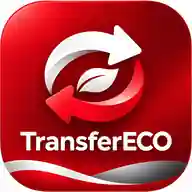

Instala TransferECO
Ten acceso directo desde tu celular. Solo necesitas hacerlo una vez.
iPhone / iPad
Desde Safari1Pulsa el botón Compartir (□↑).
2Selecciona «Añadir a pantalla de inicio».
3Pulsa «Añadir».
Android
Desde Chrome1Pulsa el menú ⋮ del navegador.
2Selecciona «Instalar aplicación» o «Añadir a pantalla de inicio».
3Confirma «Instalar» o «Añadir».
Después abre TransferECO desde el nuevo ícono de tu pantalla.